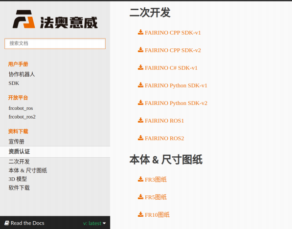
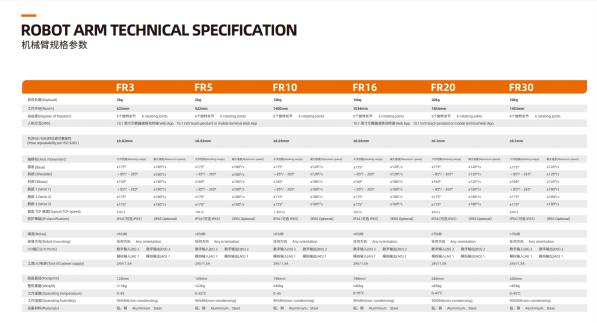
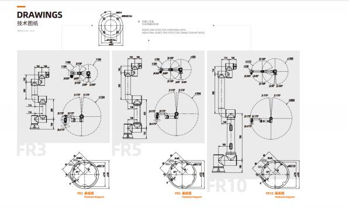
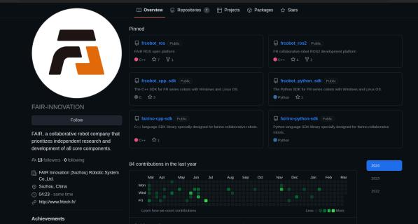
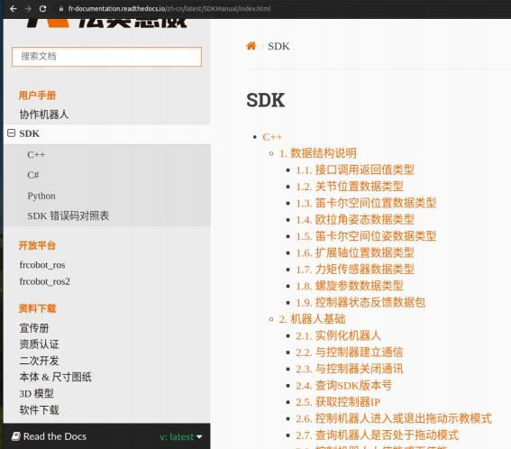
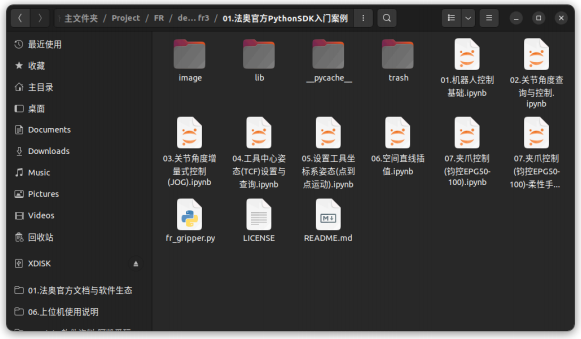

§ 2.1 法奥官⽅⽂档与软件⽣态
§ 2.1 法奥官⽅⽂档与软件⽣态
0. 概要
本⽂系统整理了法奥机械臂相关的教程⽂档与软件开发资料。
作者: 阿凯爱玩机器⼈ | 微信: xingshunkai | 淘宝店铺: "阿凯爱玩机器⼈ "
. 法奥机械臂购买链接: 法奥意威六轴协作⼯业机器⼈机械臂FR5焊接上下料搬运码垛机械⼿
0. 概要
本⽂系统整理了法奥机械臂相关的教程⽂档与软件开发资料。
作者: 阿凯爱玩机器⼈ | 微信: xingshunkai | 淘宝店铺: "阿凯爱玩机器⼈ "
. 法奥机械臂购买链接: 法奥意威六轴协作⼯业机器⼈机械臂FR5焊接上下料搬运码垛机械⼿
. B站有基于法奥开发的案例视频, 阿凯的B站主页: https://space.bilibili.com/40344504
⽂档更新时间: 2025-01-05
1. 资料下载
法奥把所有跟机械臂相关的⽂件都贴⼼的整理到了一起了， 在这⾥可以下载最新版本。

可下载的内容包括:
产品⼿册
图纸下载页⾯
. 机械臂3D模型(STEP格式)
. 认证证书(CE / CR)
SDK下载页⾯
2. 产品规格书
如果你想知道法奥协作机械臂具体的规格参数， ⽐如臂展、 负载、 重复定位精度等信息，可以下载这个 产品规格数。
常规机型有 FR3 、 FR5 、 FR10 。 FR 代表法奥， 后⾯的数字代表负载数。

需要注意的是FR3跟FR5的重复定位精度是0.02mm,绝对定位精度为1mm。 负载越⼤/臂展越⼤ ， 对应的 它的误差就要更⼤一些。 默认机械臂是不做⾼精度激光标定的， ⾼精度激光标定可以对关节零点以及连 杆的尺⼨做矫正， 标定后绝对定位精度在0.5-0.8mm之间。
此外规格数⾥⾯还有每款机型的尺⼨图， 包括连杆尺⼨ ，底部固定孔位， 末端法兰尺⼨等信息。

3. 机械臂使⽤说明
3.1 教学视频
B站视频主要侧重，上位机使⽤与⽰教相关的介绍。 教学步骤都⽐较详细， ⼊⻔相对⽐较容易。 在购买机械臂之前，你也可以先通过这些视频了解法奥协作机械臂是如何使⽤的。
⼊⻔的时候不需要把所有的视频看过⼀遍， 先看最基础的。 这⾥先就把常⽤的必要的视频列出来:
1. 机器⼈开箱
https://www.bilibili.com/video/BV1rnknYMEMN/
。 箱内配件介绍
。 机械臂运动控制器接线说明
。 ⽹口接线说明
。 ⽹络配置教程
。 机械臂激活流程
。 末端LED灯
注意事项: 初次使⽤的时候， 记得要松开机械臂的急停开关。
https://www.bilibili.com/video/BV1BYzBYGE2M/
。 机械臂基座安装平台规格要求
。 机械臂安装⽅式配置
。 负载配置
。 ⼯具坐标系配置
。 拖动⽰教⽅法
。 机械臂遥控界⾯点动
。 ⽰教点保存
。 ⽰教点管理界⾯
。 ⽰教编程 PTP指令
编辑并运⾏⽰教程序
3. FR机器⼈介绍
https://www.bilibili.com/video/BV1gpzvYpEVq/
。 各个轴的名称
。 机械臂末端M12航空插孔介绍
。 末端LED灯 颜⾊所代表含义
。 末端按钮⽤途介绍
o Web APP坐标系可视化介绍
o Web APP 机械臂遥控界⾯
4. FR机器⼈按钮盒使⽤教程
https://www.bilibili.com/video/BV18pzvYpEye/
。 ⽹口按钮
。 拖动按钮
。 记点按钮
。 运⾏模式切换按钮
。 开始停⽌按钮
。 恢复Web APP出⼚IP按钮
https://www.bilibili.com/video/BV1cLUGYwEVP/
。 Web APP 界⾯介绍， 对每个菜单项都做了简要说明。 。 介绍了机械臂编程的⼏种⽅式：
程序编程
图形化编程(代码积木)
节点图编程
https://www.bilibili.com/video/BV1uWzvYQEap
机械臂末端如果对精度要求⽐较⾼ ， 例如焊枪的场景。
在使⽤前需要做机械臂TCP标定， 视频讲解了如何⽤六点法来做TCP标定。
注: 像夹⽖这种对精度要求没那么⾼的， 可以直接⼿动设置TCP， 不需要做TCP标定。
对Web APP中三维模拟机器⼈区域做了更加详细新的介绍
。 轨迹可视化
。 导⼊⼯具模型⽂件（ ⽀持STL跟DAE格式）
。 在机械臂基坐标系下遥控
。 在⼯具坐标系下遥控
。 遥控机械臂关节
。 添加⽰教点， 可以配置关联IO
。 外部轴配置
。 ⼒传感器坐标系
o RCM远⼼不动点功能
。 其他模块的功能介绍
https://www.bilibili.com/video/BV1cjUGYhEEZ/
https://www.bilibili.com/video/BV1wVUGYYECk/
10. FR机器⼈控制箱接口使⽤说明
https://www.bilibili.com/video/BV1DpzvYpEJV/
。 运动控制器 端口详细介绍
o RS485接口
。 传送带编码器接口
。 模拟量接口
。 数字IO接口
11. FR机器⼈-控制箱IO-使⽤教程
。 按钮输⼊
。 点亮LED
。 编写⼀个简单的LUA脚本
其他更多功能的探索， 就等着你⾃学视频教程跟使⽤⼿册啦。
3.2 使⽤⽂档
|
⼿册⾥⾯介绍了机械臂对固定基座铝板厚度等要求， 硬件接线，运动控制器上的IO接口, 以及Web APP ⽰教功能使⽤ ，指令讲解等。
使⽤机械臂之前，⼀定要阅读⼀下使⽤⼿册⾥⾯相关的注意事项，尤其是安全相关的。 你也可以下载离线版本中⽂⼿册PDF下载地址。
通过阅读⼿册， 你就会发现法奥的运动控制指令是⾮常丰富的， ⽀持关节伺服、 笛卡尔伺服、 螺旋线、 样条曲线等⾼阶运动控制模式， 同时也针对众多的细分应⽤领域做了对应的控制指令。 例如焊接、 喷 涂、 打磨等。 法奥还内置了⼒控相关的运动控制指令， 不过需要加装额外的六维⼒传感器。
4. ⽰教器编程
法奥⽰教器上采⽤的编程语⾔为LUA， 跟Python类似LUA也是⼀种脚本语⾔ 。 通过Web⽰教器界⾯的功 能模块的拖拽可以⾃动⽣成LUA脚本， 对于简单的逻辑这也够了。 但是⼤多数情况下， 我们会需要添加 逻辑判断、 循环等操作。 复杂⼀些的应⽤场景实现需要⼿动编写LUA脚本。 法奥有对应的LUA脚本⼊⻔ 以及机械臂编程⽤⼾⼿册。
LUA脚本存放在机械臂运动控制器内部， 可以配置开机⾃启动。 我们⼤部分⼯业⽤⼾都是⽤这种开发⽅ 式进⾏部署的。
LUA编程⼊⻔可以看菜鸟教程: lua tutorial 法奥LUA编程⼿册下载
https://fairino-doc-zhs.readthedocs.io/latest/_downloads/5b18b273bf4ed872185f15f7862b8511/F RLua%E7%BC%96%E7%A8%8B%E8%84%9A%E6%9C%AC%E7%94%A8%E6%88%B7%E6%89%8B%E
5. 机械臂仿真机
在虚拟机⾥⾯运⾏机械臂的仿真软件， 真机跟仿真机接口⼀致。 没有实物也可以访问Web APP软件。
|
|
6. Web插件开发FRCAP
FRCap是⼀个基于Web的插件，可集成到协作机器⼈WebApp中。 FRCap通过基于Node.js和Vue3的
Element plus，frcap-ui和frcap-api等模块构建⼀个协作机器⼈WebApp配置页⾯或者应⽤来扩展机器⼈ 功能及应⽤场景。
|
|
5. ⼆次开发
除了LUA以外， 你还可以选择⽤其他编程语⾔进⾏编程， 当然需要你额外配⼀台PC/⼯控机， 机械臂跟 电脑之间通过有线进⾏连接。 建议使⽤电脑⾃动的有线⽹卡， 不推荐使⽤USB转⽹口或者通过路由器桥 接。
法奥在软件开发⽣态⽅⾯做的⾮常完善， ⽬前⽀持了C++/ C# / Python / ROS1 / ROS2多种语⾔/开发平 台。 而且代码易⽤性⽅⾯ ， 已经有了⾮常⼤的改进， 同时⽂档也写的⾮常详细了。
5.1 代码仓库主页
. Gitee: https://gitee.com/fair-innovation
. Github: https://github.com/fair-innovation

5.2 C++
法奥的C++ SDK是动态链接库的形式提供的， 不开放底层源码， example ⽂件夹下有提供C++ ⽰例代 码。 根据你的开发平台下载对应 linux 或 windows 的动态链接库。
代码仓库:
Gitee: https://gitee.com/fair-innovation/fairino-cpp-sdk
|

5.3 Python
法奥的Python SDK也是动态链接库的版本， 在使⽤之前需要将动态链接库所在的路径添加的Python PATH中。
代码仓库
Gitee: https://gitee.com/fair-innovation/fairino-python-sdk
Github: https://github.com/FAIR-INNOVATION/fairino-python-sdk
|
注意事项
1. 如果执⾏SDK发现API调不通，⼤概率是因为需要升级机械臂控制系统的固件了。
2. Python动态链接库只⽀持 x64架构的CPU，适配Windows跟Ubuntu。 ⽬前适配的的Python版本 包括:
。 Python 3.8
。 Python 3.10
。 Python 3.11
3. Python SDK有V1版本跟V2版本， 直接看V2版本就好。 V2版本⽤起来更加简单⼀些。 V1传参太冗 余了。
4. 开发⽂档⾥⾯库导⼊相关的写法都是错的, ⽤的时候注意。
应该是
|
另外，为了⽅便客户⼊⻔ ， 我们也编写了⼀些法奥Python SDK的教学案例, 可以联系阿凯获取。

5.4 C#
做⼯业⾃动化软件的客户应该会⽐较喜欢C#， 另外Unity的玩家也可以⽤这个。  代码仓库:
代码仓库:
Gitee: https://gitee.com/fair-innovation/fairino-csharp-sdk
Github: https://github.com/FAIR-INNOVATION/fairino-csharp-sdk
|
5.5 JAVA
代码仓库:
|
5.6 RoboDK
RoboDK适配法奥机械臂的后处理器
https://gitee.com/fair-innovation/robo-dk-post-processor
5.7 ROS1 & ROS2
ROS1代码仓库
法奥官⽅的ROS1包已经停⽌更新维护了, 跟机械臂最新的固件已经不兼容了。 Gitee: https://gitee.com/fair-innovation/frcobot_ ros
Github: https://github.com/FAIR-INNOVATION/frcobot_ ros/ ROS2代码仓库
ROS2的⽣态还不那么完善， ⽬前阿凯建议使⽤ROS1 Neotic。
Gitee: https://gitee.com/fair-innovation/frcobot_ros2
Github: https://github.com/FAIR-INNOVATION/frcobot_ros2
编程⼿册
|
|
⼿册主要侧重 开发环境搭建与编译过程。 ⽂档部分还没有做的很详细。
|
注意事项
. 法奥旧版的机械臂是V5.0系列， 新版是V6.0系列。 他们的连杆尺⼨不相同，对应的URDF模型也不 ⼀样。 因此在⽤ROS包的时候， 注意版本是否匹配。 新出货的都是V6.0版本。
. 机械臂URDF模型推荐使⽤ROS2包 fairino_description ⽂件夹下的URDF模型。
. 法奥官⽅的ROS1跟ROS2包都是基于ROS Control架构适配的驱动层， MoveIt轨迹执⾏的时候， 不 是那么平滑。 同时， 也没有提供Python⽰例代码。
. ⽬前阿凯⾃研的法奥ROS包适配的是ROS1 Neotic (Ubuntu 20.04), 兼容最新固件， 做了轨迹优化 ⽅⾯的⼯作， 也提供基于Python的⼊⻔学习案例。 阿凯⾃研的法奥案例包是单独销售的， 详情请 咨询阿凯（微信: xingshunkai）。
6. 联系阿凯
如果你有协作机械臂相关的应⽤需求， 可以找我们来做项⽬评估， 我们也可以协助做一些验证⼯作。